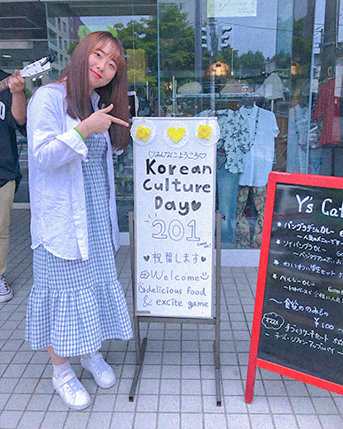
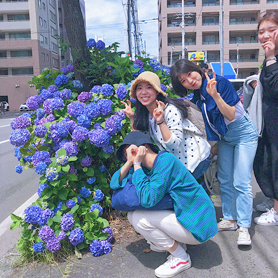

올 한해 상반기동안 3번이나 일본을 오게 될 줄은 몰랐다. 중학교 시절부터 일본 만화나 소설를 보며 언젠가는 나도 이곳에 가야겠다고 상상만 했었다. 이뤄질 수 있을까 상상조차 어려웠던 일들이 현실이 되어 나는 세번째로 이 곳 땅을 밟게 되었다. 그리고 이번에야말로 그 시절에 꿈꾸던 너를 만나게 될거라 희망에 부풀었다.
2019년 7월 4일,기독교 동아리 친구들과 삿포로 행 비행기를 탔다.
우린 홋카이도 대학생들을 초대하는 파티를 준비했다. 모르는 사람이, 그것도 한국어도 어눌한 외국인이 수상한 초대장을 내민다면 당신은 받겠는가? 일단 난 아니다. 나는 도망친다. 일본인들도 역시 도망쳤다. 산더미 같은 초대장을 들고 멘붕에 빠진 우리에게 너는 자전거를 타고 왔다.“Long time no see!" 너의 첫 마디였다.
유야는 홋카이도 대학교 농경학부이고 그림그리는 걸 좋아한다. 유야가 유치한 게임들도 의외로 즐겁게 참여해주어 기뻤다. 내가 꿈을 꾸고 있는걸까?진짜로 내 또래의 일본인과 대화를 하는 날이 오게 되다니!3시간이 훌쩍 지나버렸다. 헤어지기 전, 우린 카카오톡 아이디를 주고 받았다.그 후로 오늘까지 유야는 그 어느 지인보다 나의 근황을 잘 아는 소중한 베프가 되었다.